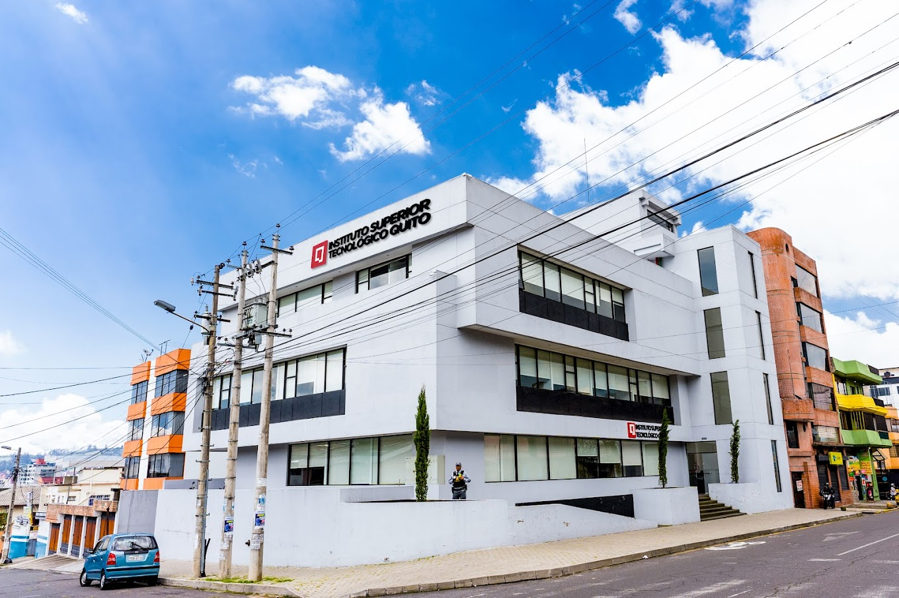
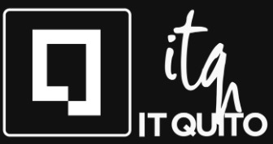

ACERCA DE
INSTITUTO TECNOLÓGICO SUPERIOR QUITO

La metodología desarrollada por el ITQ contribuye, para que a través del conocimiento puedas SABER, este saber te lleva a utilizar la tecnología y esta comprensión te abre el camino al saber HACER, con la práctica a través del desarrollo de tus proyectos en la carrera, se complementa para que lo hagas BIEN.
Una metodología modular, plataformas tecnológicas, laboratorios, mentores expertos en cada área y conocimiento actualizado hace que en cada carrera logres la expertise y te formamos en SABER HACER BIEN.
Enviar email |
Ir a página del ITQ |
Ir a inicio |
